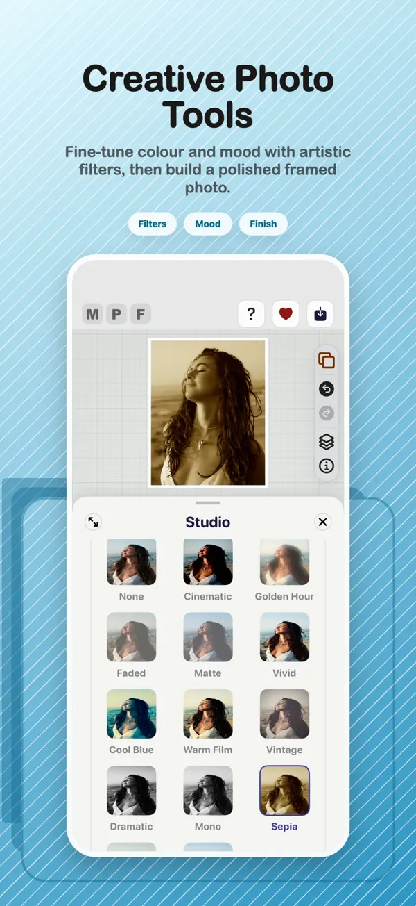
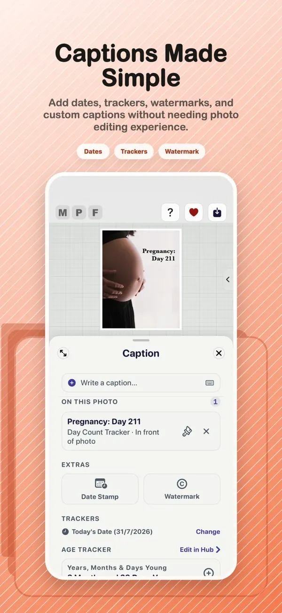
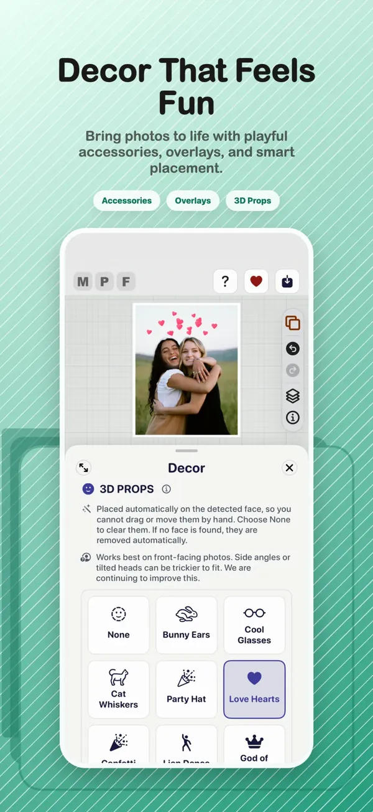
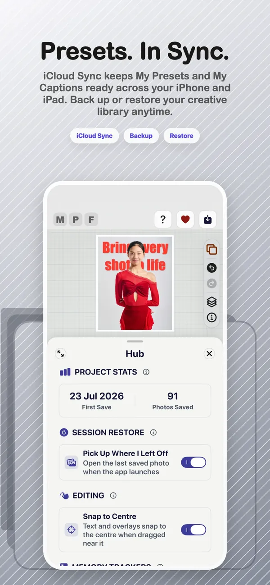

01 · Start
Choose a style
Import a photo, explore frames and use Studio tools to establish the look.
This guide will grow into a complete tap-by-tap walkthrough. For now, here is the creative journey from the first photo to a finished export.
The finished version will include annotated screenshots, accessibility notes, practical tips and short videos.

Import a photo, explore frames and use Studio tools to establish the look.

Use the unified text tools to add captions, trackers, watermarks and dates.

Experiment with Layer Magic, 3D Pop, props and decorative finishing touches.

Check the result, choose export quality and save a dependable finished image.